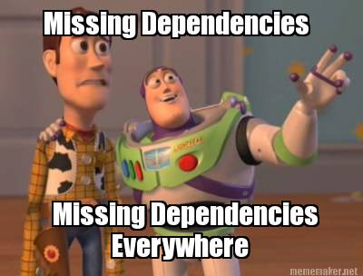

Vagrant
Development environments made easy
Felix Peters
Vollblut Onliner und PHP-Entwickler
www.wichteldesign.de / www.felixpeters.de
Twitter: @el_wichtel
Github: Wichteldesign
$vagrant init
a brief introduction
Linux? Ok, easy...
MAMP/XAMPP?
Virtual Box?
Server?
...
"For me it works"
- unknown developer -
Create and configure lightweight, reproducible, and portable development environments.www.vagrantup.com
Why Vagrant?
As a developer:
Isolate application dependencies and their configuration
Plattform independent
Reproducable, disposable, consistent environments
Say goodbye to "works on my machine" bugs.
As a operations engineer:
Test your infrastructure management scripts
Run the same scripts directly in a cloud
Provide production like development enviroments
Test multi machine setups
As a designer
Set everything up that is required for a web app in order for you to focus on doing what you do best:
design!
What is Vagrant?
Provider
+ Provisioner
+ Plugins
= Vagrant
Provider
VirtualBox, VMware, Docker, Hyper-V, Amazon AWS, Rackspace, ...
Box
Preinstalled images of Linux, Windows, etc. with some required tools like git or puppet
Provisioner

Shell, Chef, Puppet, Ansible, Docker, Salt, ...
http://www.wix.com/blog/wp-content/uploads/2012/01/WhopperVMcDonalds.jpg
The cool Features
 http://img1.wikia.nocookie.net/__cb20120602054303/icarly/images/c/c6/Cereal_Guy.png
http://img1.wikia.nocookie.net/__cb20120602054303/icarly/images/c/c6/Cereal_Guy.png
Network
FORWARDED PORTS
Map local ports to ports on the box
Vagrant.configure("2") do |config|
config.vm.network "forwarded_port", guest: 80, host: 8080
end
Synced Folder
Sync local folders to the box (mostly on the fly)
RSync, SMB, NFS, VirtualBox
config.vm.synced_folder "./vagrant", "/var/www/vagrant"
Plugins
Plugins are powerful, first-class citizens that extend Vagrant using a well-documented, stable API that can withstand major version upgrades.
Add new features or modify existing ones
Package Manager, Host Updater, Local Domain Resolution, etc.
Provider for AWS, Racksapce, etc.
https://github.com/mitchellh/vagrant/wiki/Available-Vagrant-Plugins
VAGRANT SHARE
New in Vagrant 1.5
Expose a box to the web via ssh
Alternative: Ngrok
MULTI-MACHINE
Simulate cloud / cluster enviroments
Local integration tests
Local failover tests
Vagrant.configure("2") do |config|
config.vm.provision "shell", inline: "echo Hello"
config.vm.define "web" do |web|
web.vm.box = "apache"
end
config.vm.define "db" do |db|
db.vm.box = "mysql"
end
end
Continuous Integration
Use a vagrant box from Jenkis as isolated test enviroment